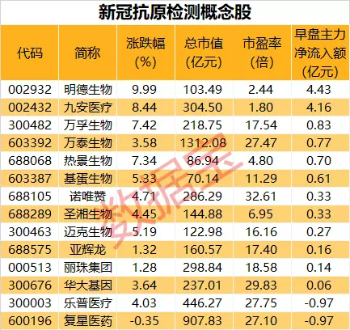
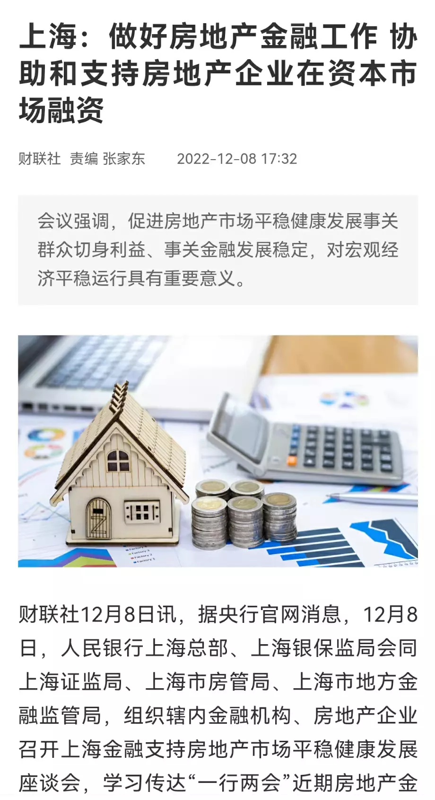
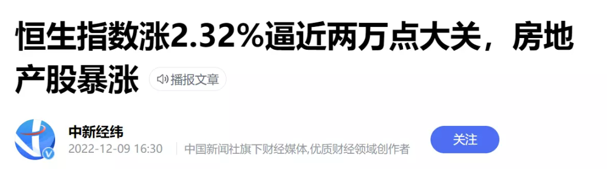
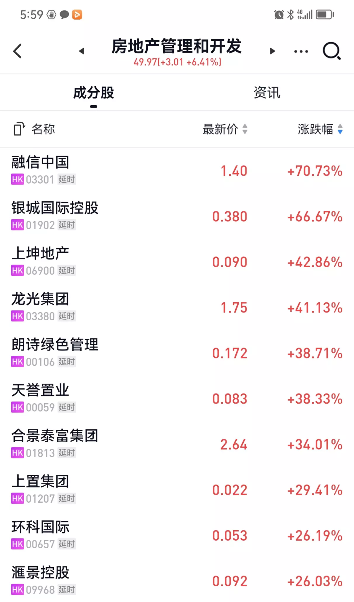
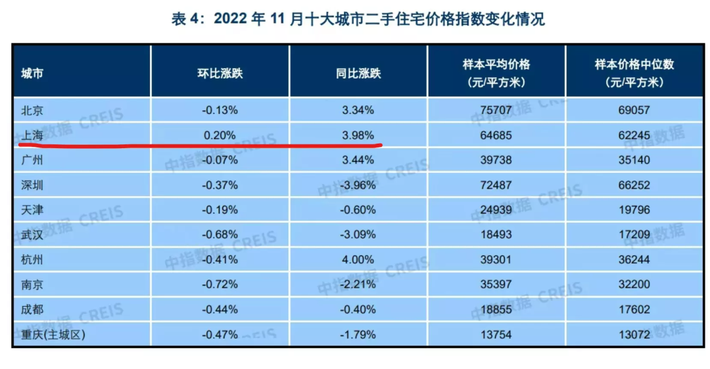

房住还炒不炒？
V姐万事屋 V姐来了[V姐来了](http://weixin.qq.com/r/SDmHg1bExZ65KRLgb2zM)
| 微信号 | Vjielaile |
| 功能介绍 | 一起来把想要的生活收入囊中。 |
2022-12-09 19:38
原文链接(长) 原文链接(短)
Hi，我是V姐。
今天上证走了一个V，三大指数收红。
抗原检测和地产板块大涨。
抗原呢很好理解，以后不测核酸了，大家有需要自己测抗原，全民多少囤一点。
国务院联防联控机制昨天发布了《新冠病毒抗原检测应用方案》，每家基层医疗卫生机构按照服务人口总数的15%-20%储备抗原检测试剂。
目前抗原板块整体估值不算高，超过6成的个股滚动市盈率不到20。明德生物和九安医疗还不到3倍，所以最受资金青睐。

地产就有意思了。
12月8日，上海金融支持房地产市场平稳健康发展座谈会召开。

这个会里除了支持房企融资之外，重点是提到了 **着力保障刚需和改善个人住房贷款需求。**
什么意思呢？
就是要让你尽量能贷款。
现行哪些政策阻碍你贷款？
**三价就低、认房认贷、二套7成首付。**
过去3年，对于深圳、上海来说，压制交易的最大杀器是三价就低，也就是二手房指导价。
比如成交1000万的房子，本来首付350万，贷款650万。
现在银行评估价只有600万，那么就按照600\*0.65=390万来放贷款。
你首付需要610万。
这下原来买得起的，就买不起了，交易量一下子就下来了。
相应的，还有认房认贷，你哪怕在外地贷过款，已经还清了，还是算二套，首付7成，这个就不容易释放购买力。
因此，上海未来1个月内，上面几条，一定会有放松，我们拭目以待。
这几天，武汉、东莞、成都等也有不同程度地放开限购。但是这些城市都不能影响大盘，因为楼市启动的市场，只能由一线城市带动，其他城市带不动。
也有朋友关心上海会不会放松限购？
**可以看一下图中参会的单位，没有人社局，所以不会放开限购，只会在资金层面降低门槛。**
这个也是解读政策的小技巧，要根据参会部门，来判断政策走向。
另外，说地产股今天有意思，更多在港股。
A股的地产最多算大涨，港股是暴涨。

一水的20%以上，融信涨了70%。

这个就是小作文又来了。
15号我们的中央经济工作会议召开， **有消息说政策面会退出【房住不炒】。宣布自16年以来，为期数年的房地产市场去杠杆运动已经完成。**
消息是出口转内销，但是明显资本市场是买单的。
最近数月，小作文被证实的概率越来越大。结合前几天政治局会议通稿看，这次消息的真实性颇高。
因此对于刚需的朋友，除了看大会，密切关注上海楼市的近况即可。要涨它先涨，它不涨，你的城市大概率不会启动。
自媒体号里，今年唱衰上海的吃了一大波流量红利。
你要做号，当然可以这么搞。
但是不地道的地方在于，前脚唱衰上海，后脚唱多环沪。
前脚唱衰一线城市，后脚倒推起了鹤岗的房子。
11月二手房数据，环比同比唯一都上涨的，就是上海。

工具箱里的很多工具还没有用，银行增加的14.5万亿存款，不可能一直存着。
**长期看，总出生人数下滑和一线城市群人口增加，是同时发生的事情。**
分化是主题，屁股往发达地区挪一挪，有人理解为忽悠你来接盘，有人理解是保护自己的财富。
说到底，每个人都是自己选择的第一责任人。
朋友们，你们怎么看呢？